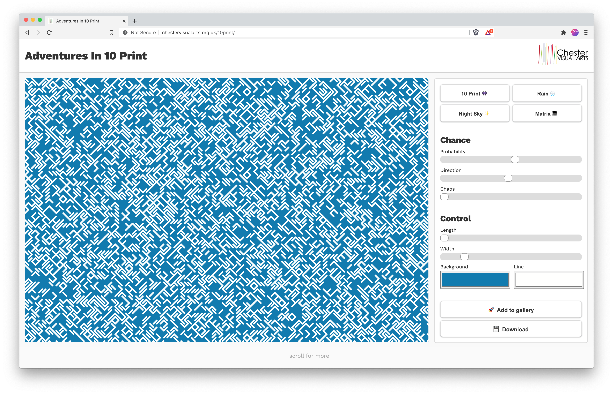

Adventures In 10 Print is an interactive generative artwork & e-gallery exploring the theme of 'Chance and Control'.
Overview üåç
In September 2020, I was commissioned to explore the theme of 'Chance And Control' by the V&A and Chester Visual Arts. I built Adventures In 10 Print, an interactive website which enables people of all technical abilities to play with a classic computer art algorithm & share what they create in a public gallery.
About the work üé®
The 10 Print algorithm is the essence of 'Chance and Control'. The sequence of computer-generated randomness used to draw the sequence has a near 0% chance of ever repeating in that order again. So each time it runs, it produces an entirely new pattern, but retains a fundamental set of aesthetic characteristics the viewer can control.
The browser window itself acts as both the medium of creation and display, which presents an interesting dynamic. I hope to remind the viewer that the internet can still (sometimes) be a fun and playful place by re-appropriating the idea of a 'website' to serve purely artistic ends.
